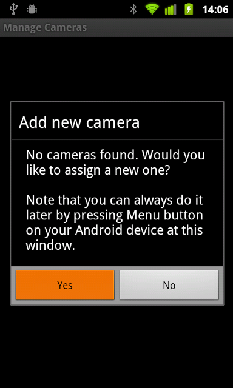
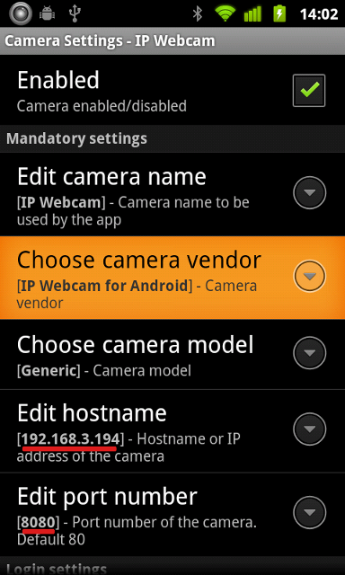

Set up tinyCam Monitor
tinyCam Monitor by Alexey Vasilyev is an Android application for remote surveillance, supporting all major camera vendors, including IP Webcam.
It supports IP Webcam's audio (Pro version) and extended features, like controlling LED and autofocus.
Video showing IP Webcam and tinyCam Monitor in action (internet connection required).
Get it here or by scanning this QR code with Barcode scanner
In the application, select "Manage cams", add a new camera, and select vendor "IP Webcam for Android".
Enter the hostname $IP$, select your configured port $PORT$ and you are good to go.
 VLC Media Player is a cross-platform video player, streaming server and converter solution in a single package. Get it here.
For using IP Webcam with VLC media player, in its menu select Media ⇨ Open Network Stream and enter $URL$/video for streaming video or $URL$/audio.wav for streaming audio.
You can also use VLC Media player for video recording:
Use this configuration:
General:
Source type: Remote
Function: Monitor
Source:
Protocol: HTTP
Method: Simple
Host name: $IP$
Port: $PORT$
Remote host path: /video (just "video" doesn't work).
Note: If necessary, specify your username in password in URL, like this: username:password@$IP$.
Open "Add camera" dialog as usual
When using IP Webcam, you have to pick "MJPEG Stream" from the list instead of a specific camera.
Video path: /video
Audio path: /audio.wav
Host name: $IP$
Port: $PORT$
It doesn't matter what you enter into "RTSP/video port" box.
In webcamXP main interface, right click on video source and select Network cameras ⇨ Connect...
Set Camera Brand to Android and Camera Model to IP Webcam. Select desired preset (MJPEG recommended). Click Next.
Set Hostname to $IP$ and Port to $PORT$.
Click Ok, and you're ready to use your new camera!
Please follow the official tutorial for connecting IP Webcam to iSpy.
Here is the list of IP Webcam service URLs:
- $URL$/video is the MJPEG URL.
- $URL$/shot.jpg fetches the latest frame.
- $URL$/audio.wav is the audio stream in Wav format.
- $URL$/audio.aac is the audio stream in AAC format (if supported by hardware).
- $URL$/audio.opus is the audio stream in Opus format.
- $URL$/focus focuses the camera.
- $URL$/nofocus releases the focus.
You can access your phone via the internet when your phone is connected to WiFi and the WiFi router has an external IP (it most likely has one). The configuration requires a bit of work, but most people can manage it.
Important: Please also read the MAC binding guide to prevent your internal IP from changing.
Via your router's web interface, you should forward the server port to the internet and access the camera using router's external IP. This function is usually called "Port forwarding", "Virtual servers". You should see router's documentation on how to do it. There's also a free database of manuals for port forwarding on http://portforward.com/. Just disregard the paid stuff, you only need manuals.
The setup will look like this:
Phone (192.168.3.198, server at 8080) ---> Router (Forwarding 192.168.3.198:8080, external IP is 66.77.88.99) <--- Any client with internet access (by opening http://66.77.88.99:8080).
There's a shortcut in determining your external IP and checking IP Webcam's visibility over the internet. If you cannot find your external IP in router's settings, you can get it by visiting http://whatismyip.org. To check if you properly configured your router, use any online port scanner, like this one. Enter your external IP in the IP field (in my example, 66.77.88.99), and external forwarded port in "list of ports" field (8080 in my example).
Note that you likely won't be able to access your phone via router's external interface while inside the same router's network. That's a frequent bug with router's firmware. You have to be in other WiFi network or over 3g to do it.
The device in charge of allocating the IPs is your WiFi router. The IP allocation ("lease") is given for some time and can change after it's expired. This might make IP Webcam inaccessible by the previous address.
To prevent this from happening, you need to enter router's web interface and allocate your device a static IP. Search for menu items similar to "DHCP clients", "Static leases" or "IP/MAC binding", and add an MAC binding here to the desired or current IP.
MAC address of your phone can be found in Settings->About Phone->Status->WiFi MAC address.